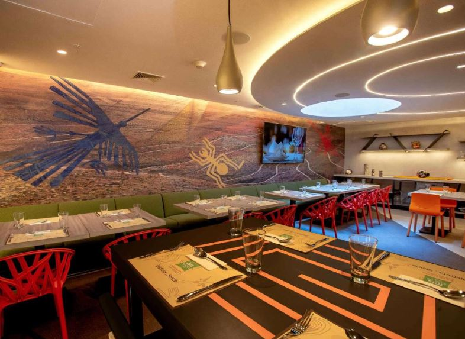

Ibis Styles (Lima)
- El ibis Styles Lima Benavides Miraflores se encuentra en Lima, a 2,4 km de la playa Redondo, y cuenta con restaurante, terraza, aparcamiento privado gratuito y salón compartido.
- Este hotel de 3 estrellas dispone de bar y habitaciones con aire acondicionado, WiFi gratuita y baño privado
- El establecimiento es para no fumadores y está a 2,5 km de la playa de La Estrella.
El ibis Styles Lima Benavides Miraflores sirve un desayuno buffet todas las mañanas.Hay centro de negocios y bar cafetería. El personal de la recepción, abierta las 24 horas, habla español e inglés, y puede facilitar información útil sobre la zona. El aeropuerto más cercano es el internacional Jorge Chávez, a 22 km del ibis Styles Lima Benavides Miraflores.
$99.00 / Per Night